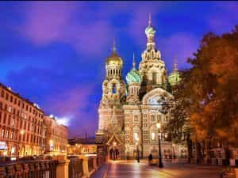

Quintus can be found at qcurtius.com. He is the author of the books On Duties, Thirty Seven, Sallust: The Conspiracy Of Catiline And The War Of Jugurtha, and other books. His work has been reviewed at Taki's Magazine. He can be followed on Twitter


Peter the Great (1672-1725) was one of the pivotal figures of Russian history. His reforms were a product of his personality and his vision for what he wanted Russia to become; and sometimes in history, personality matters more than those vague “historical forces” that professional historians like to imagine as controlling the destinies of men.
Russia in his day was still half-barbarous. To rule her he had to be an absolute monarch, and never for a moment doubted his right to be so. His personal habits say much about him: he had little need for sleep, regularly working for fourteen hours (or more) per day. Alcohol was considered, then as now, an acceptable escape from the drudgery of rule; but he knew when to limit his intake, and forbade his ministers from excessive consumption. His sexual appetites were as normal as any man’s, but he showed little interest in the kind of conspicuous indulgence that characterized most of his contemporaries in western Europe.
He did make a point of choosing mistresses of lowly origin, rather than from titled families; he had no desire for intellectual competition in the bedroom. When Frederick II of Denmark teased him about the type of women he chose, his response was “Brother, my women do not cost me much, but yours cost you thousands of crowns which might be better spent elsewhere.”

He chose to spend most of his time in the city that bore his name, St. Petersburg. He liked maritime affairs, and wanted to be near the sea. He disliked the atmosphere of Moscow, with its abundance of clergy and freezing winters. It was the army that first felt the effect of his modernization programs. Peter introduced conscription, a professional officer class, and defined periods of service; his naval program was less effective, and most of the vessels built during his reign were not of high quality.
He realized that he would never be able to make Russia into a great power unless he changed the mentality and outlook of the people. And like many rulers before and after him, he underestimated just how difficult this task would prove to be. After his death, many of his reforms were permitted to wither on the vine; but at least some tentative first steps had been made that future monarchs might draw inspiration from. By imperial decree he banished beards in 1698 (an exception was made for the Orthodox Patriarch); this was a shocking step in a country where whiskers had become a symbol of piety and fidelity. Those who insisted on keeping them could do so by paying an income-adjusted annual tax. We are told that some distraught peasants obsessively saved their shaved facial hair, lest they incur some disfavor from the saints.
But there was method to Peter’s apparent madness. He understood that appearance and thought are connected, and that if a man wished to change one, he had to change the other. In 1700 Peter decreed that all royal officials had to adopt Western-style clothing. Trousers and cloaks were acceptable; caftans or overly “oriental” garb was not. Like Kemal Ataturk two centuries later, he had no patience for backsliders or protesters, whom he swept aside ruthlessly. In social relations, he ended for good the traditional practice of secluding women from public intercourse with men, a habit that had probably been an inheritance from the Mongols.
These reforms gained Peter some bitter enemies among the clergy. For centuries the Russian ecclesiastic establishment had held a near monopoly on education and rural social life; Peter’s reforms threatened to erode this base, and they saw in him an implacable enemy of traditional belief. They also suspected him of having had too much contact with western Europeans, a fact that–it seemed to them–made him nearly an atheist. Peter did not help matters by openly mocking their rituals and folkways; as he saw matters, it was his responsibility to bring Russia up to par with the other advanced nations of the day, and resistance from obscurantist clerics could not be tolerated.
Peter solved this problem for a time by making himself the head of the Orthodox Church in 1700 when Patriarch Adrian died. He did not appoint a successor, and went one step further in 1721 by abolishing the title of patriarch altogether. In its place he formed a council of clerics that he himself would appoint; with this measure, the Church effectively became an arm of the state. Ecclesiastical grumbling was audible, but Peter wisely refused to venture into disputes with the priests over religious doctrine. He cared about power, not theology.
Slowly he made progress in industrialization. This frankly could only be done with dictatorial power, and to this end he reorganized the traditional Russian boyar system. In place of the old aristocracy, a new one arose that was based on military and civil function. His rule saw some success in mining and textile work: when Peter died in 1725, Russia was exporting iron, and state-sponsored factories made modest gains in cloth manufacture. Protective tariffs were used to shelter the new industries from suffocating foreign competition.To pay for all this, Peter unashamedly taxed everyone in his realm to the limits of their tolerance. State tax revenues rose from 1.4 million rubles in 1680 to 8.5 million in 1724. The majority of this revenue went to the military.
A Russian boyar
Ambitious plans existed for education, too. Peter ordered the old Slavonic alphabet used by the Church to be replaced by a new system (based on Greek letters). He imported printing presses, founded institutes, and organized professional associations to spread the ideas that were current at the time in western Europe.
What was the net result of all this effort? The picture was a mixed one. Reformers are not usually popular, as by their very nature they are required to focus attentions in different directions. Men and horses do not appreciate new stirrups. The peasantry–already used to a harsh existence–found themselves taxed to exhaustion; Moscow became filled with paupers who alternated between banditry and begging. The nobles hated him with the same ferocity as the French nobles hated Richelieu, and for the very same reason: because he forced them to serve the nation rather than each other.
As his unpopularity grew, Peter resorted more and more to the whip and the dungeon to implement his designs. Perhaps there was no other way. But at the very least, his example pointed the way for future authoritarian leaders who would drag Russia, kicking and screaming, into the modern era. Some of his achievements were lasting and significant, and some were not. In history, even great men must contend with the limitations of their era, and try to balance their own vision with the possibilities granted them by circumstance. It is on this precarious tightrope that all great men walk.
Read More: 4 More Countries To Emigrate To If The West Collapses